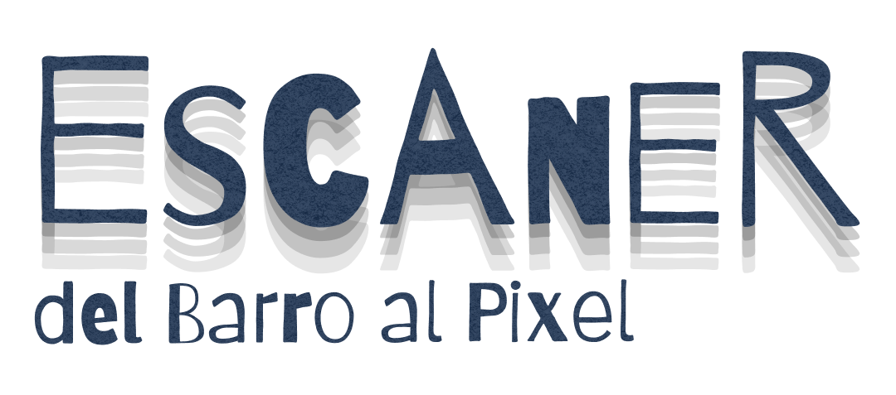
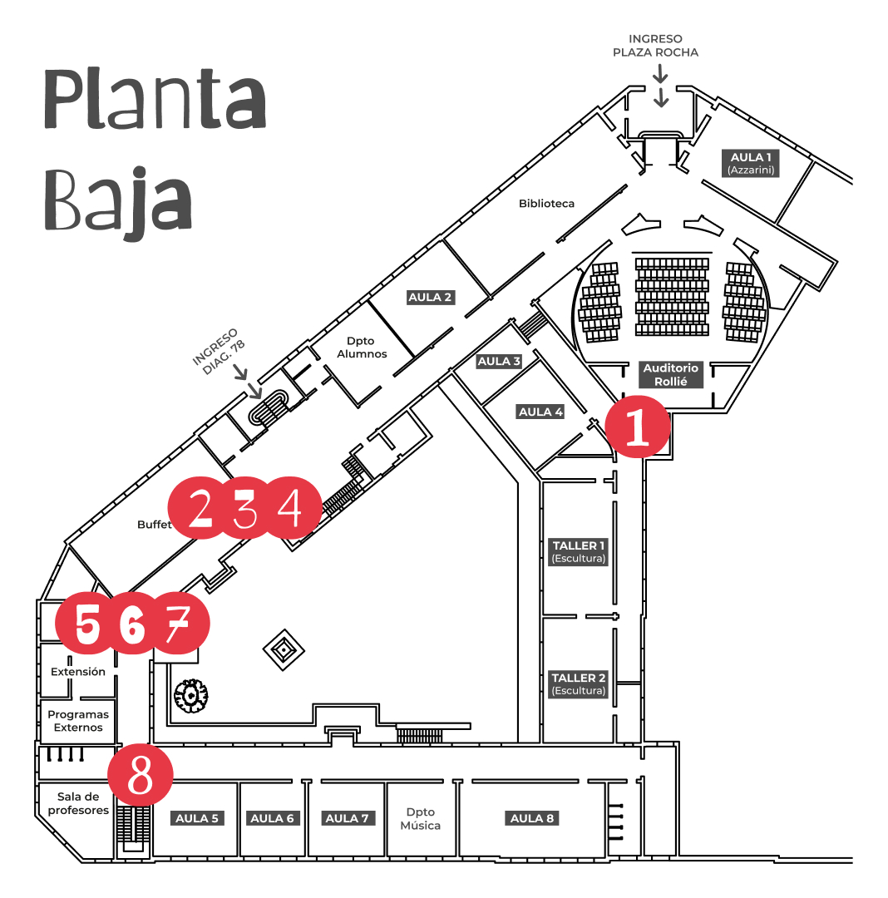
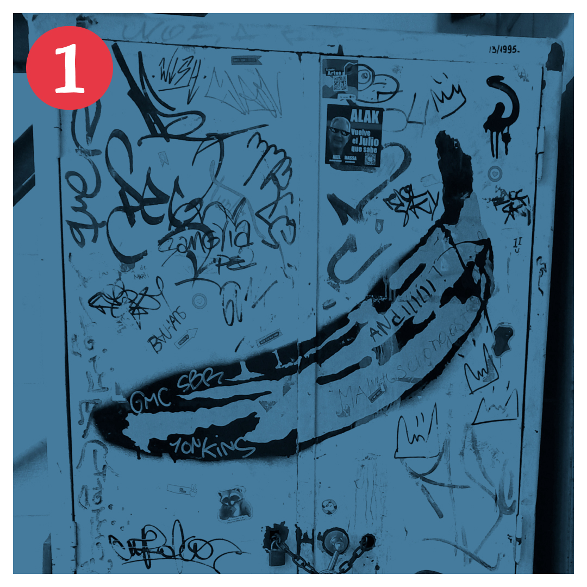
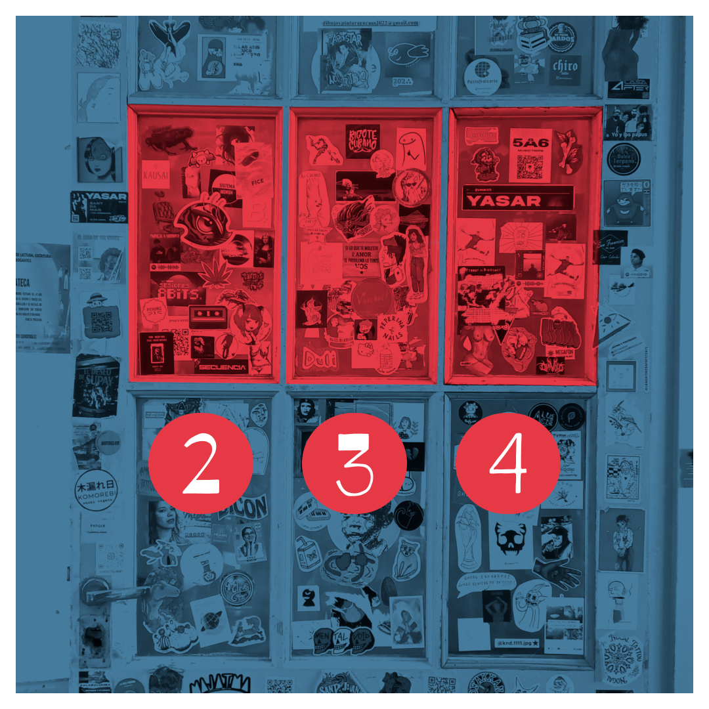
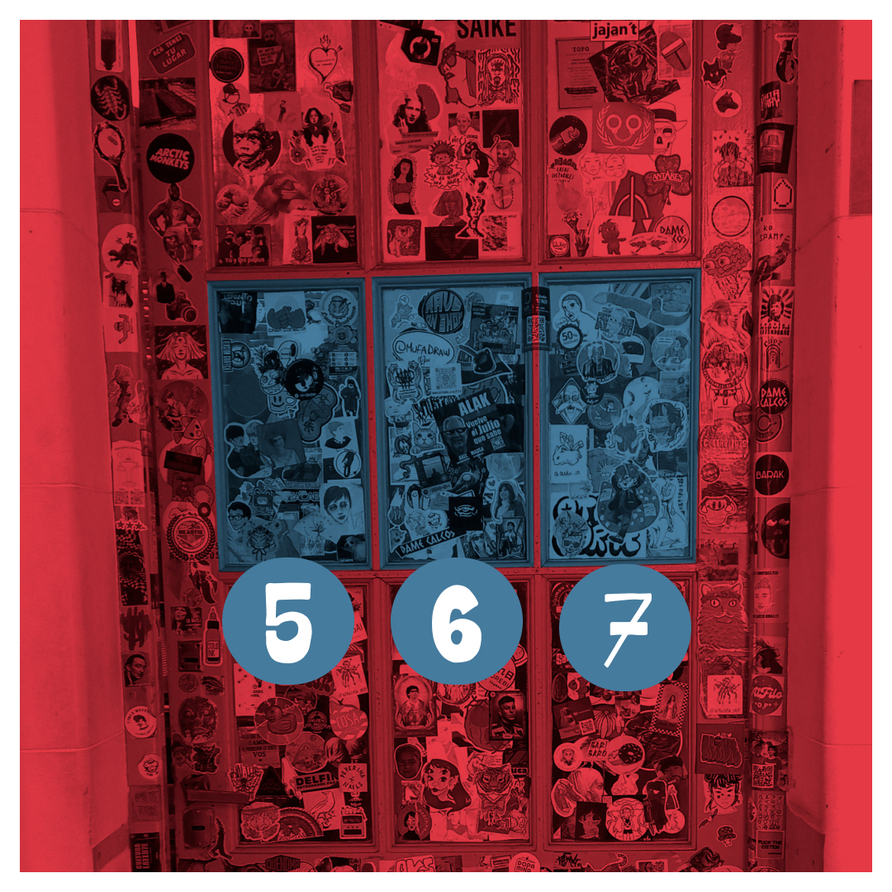
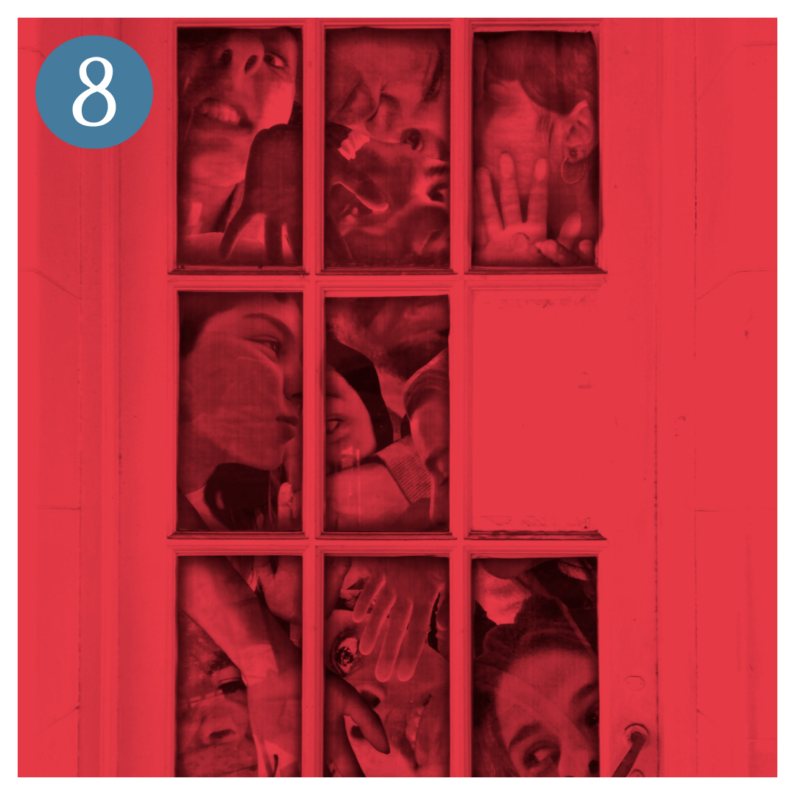
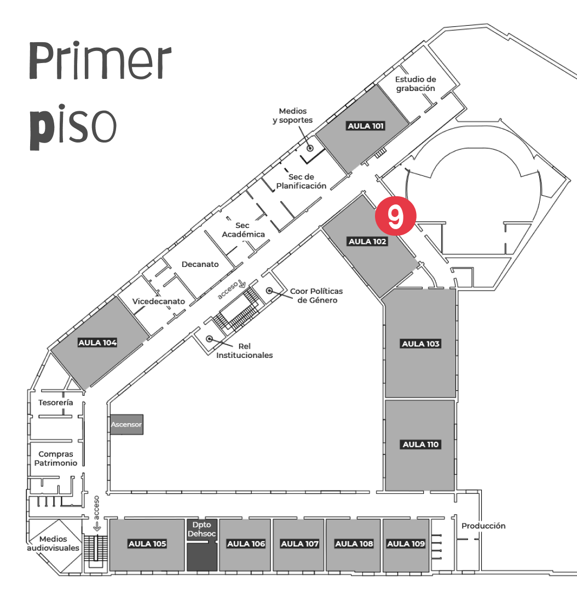
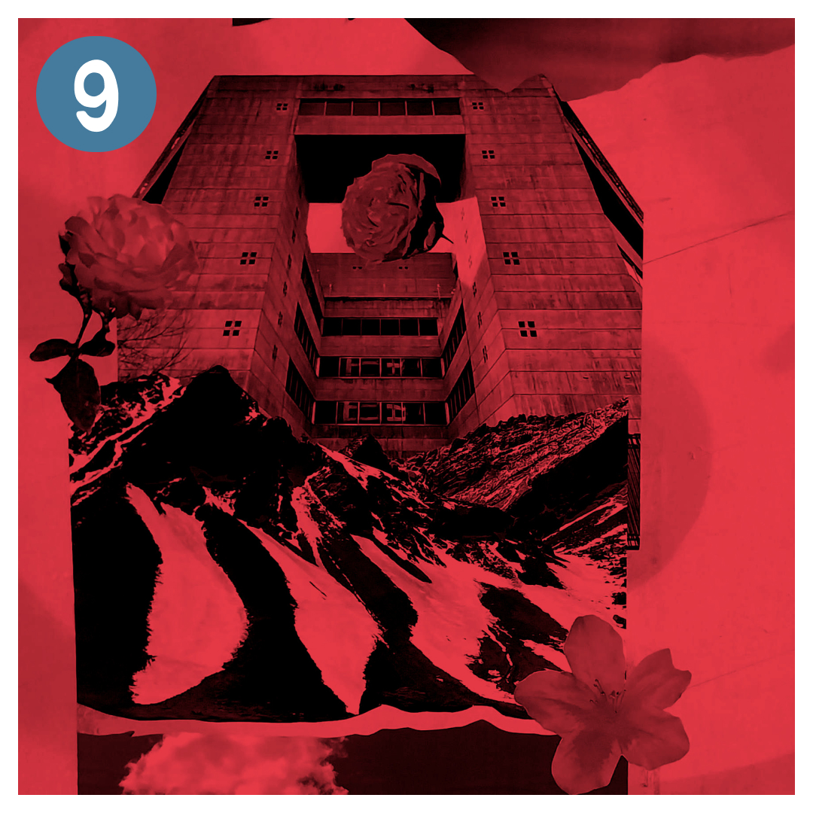
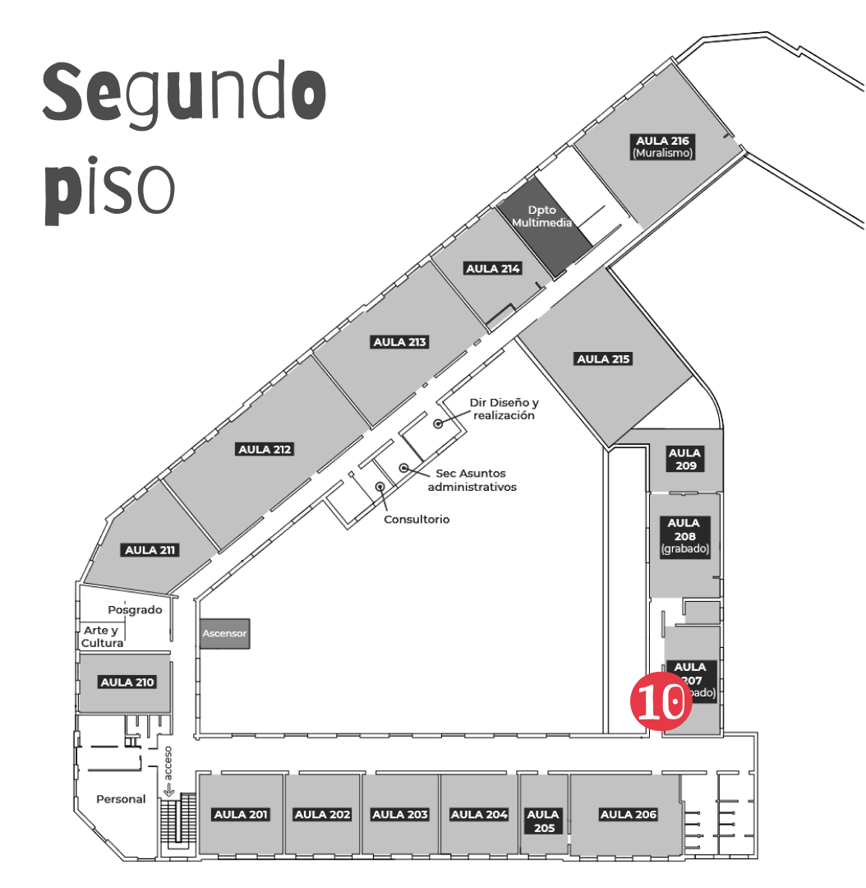
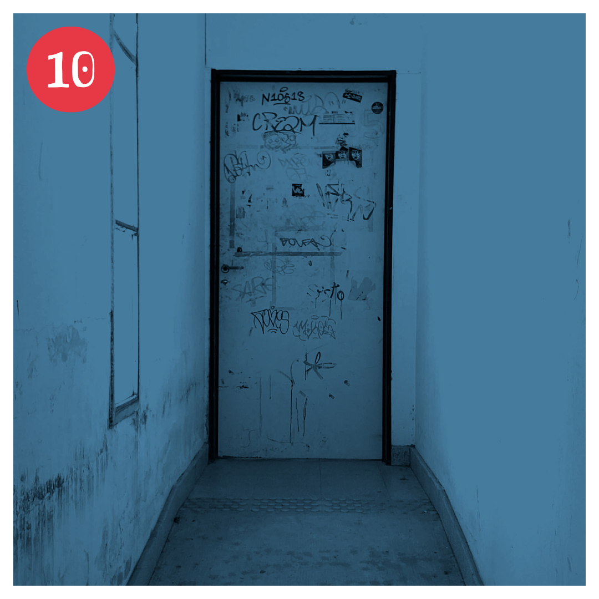

Escaner es la primera muestra de Realidad Aumentada y Fotogrametría realizada en la facultad. Es el resultado de un taller realizado el 10/11/2023 por integrantes del emmeLab.
Consiste en una serie de obras digitales dispuestas en diferentes espacios del edificio de Sede Central. Dichos objetos se pueden ver a través de la realidad aumentada en esta misma página web.
El eje en esta ocasión fue la vida dentro de la Facultad de Artes, o lo que eso signfique.
Para ver dónde están las obras abrí el mapa, y para ver cada obra apuntá tu cámara al espacio de la facu en el que estés.








